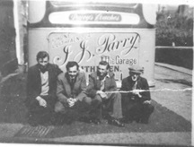
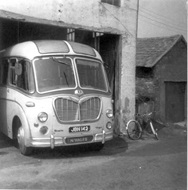
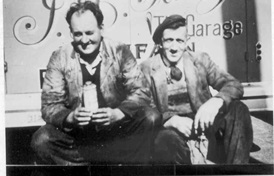
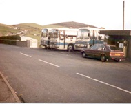

Garage
The business started around 1949. Ifan Jones Parry’s garage was a popular meeting place amongst the lads in the village. Above the garage there used to be a billiards room, and frequent boxing practice was held here, when the billiards table was unavailable. The drama company used to meet here. There used to be petrol pumps here (ESSO/National). They caught fire in the 1970s.

Some of the villagers posing behind Ifan Jones Parry’s bus.
One of the busses in the garage
Ifan Jones and Wil Pen Cefn.
Ifan Jones Parry’s busses parked opposite the garage.